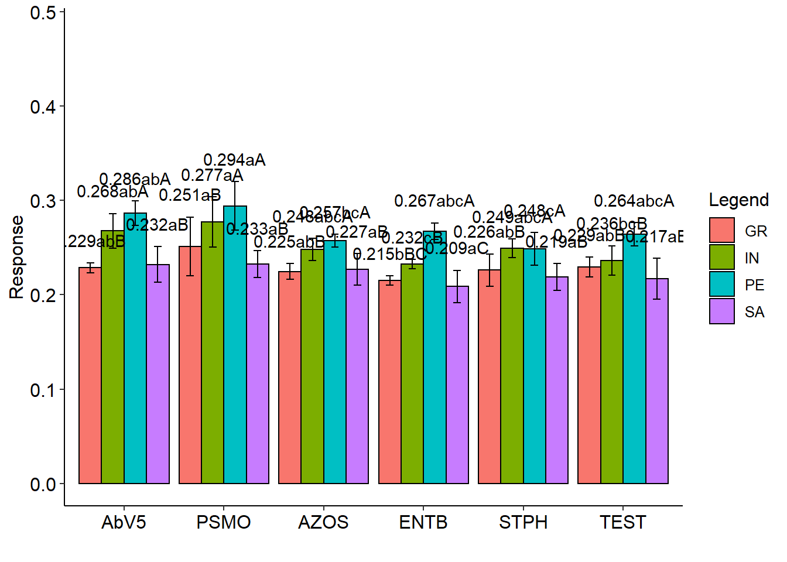

13 Parcela subdividida
13.1 Teoria
- Tal como no caso de fatorial, o termo parcelas subdivididas não se refere a um tipo de delineamento e sim ao esquema do experimento, ou seja, a maneira pela qual os tratamentos são organizados.
- Nos experimentos em parcelas subdivididas, em geral, estuda-se simultaneamente dois tipos de fatores os quais são geralmente denominados de fatores primários e fatores secundários.
- Em um experimento em parcelas subdivididas, as unidades experimentais são agrupadas em parcelas as quais devem conter um número de unidades experimentais (subparcelas) igual ao número de níveis do fator secundário.
- Na instalação os níveis do fator primário (A) são distribuidos às parcelas segundo um tipo de delineamento experimental: DIC, DBC, DQL.
- Posteriormente os níveis do fator secundário (B) são distribuídos ao acaso às subparcerlas de cada parcela.Tal disposição permite obter uma estimativa geral de maior precisão para os efeitos dos tratamentos do segundo fator.
- Nos experimentos em parcelas subdivididas tem-se dois resíduos distintos: um correspondente às parcelas e outro às subparcelas dentro das parcelas.
- Em casos mais complexos, as subparcelas podem, também, ser repartidas em subsubparcelas. Tem-se, neste caso, três resíduos distintos:
- resíduo (a), referente às parcelas;
- resíduo (b), à subparcelas e
- resíduo (c), correspondendo às subsubparcelas.
13.1.1 Vantagens
Em comparação com experimentos fatoriais, experimentos em parcelas subdivididas são mais fáceis de instalar;
Quando os tratamentos associados aos níveis de um dos fatores exigem maior quantidade de material na unidade experimental do que os tratamentos do outro fator.
O esquema pode ser utilizado quando um fator adicional é incorporado num experimento, para ampliar seu objetivo.
Através da prévia informação, sabe-se que maiores diferenças podem ser esperadas entre os níveis de um certo fator do que entre os níveis do outro fator.
13.1.2 Desvantagens
Do ponto de vista estatístico, os fatoriais são, em geral, mais eficientes que os em parcelas subdivididas;
Enquanto nos fatoriais temos um são resíduo para todos os F e comparações de médias, no “split-plot” há dois resíduos, um para comparações de parcelas e outro para subparcelas;
Para parcela, o número de GL geralmente é pequeno, levando à pouca sensibilidade na análise;
Sempre que possível, é preferível utilizar experimentos fatoriais em lugar dos experimentos em parcelas subdivididas.
13.1.3 Modelo estatístico
O modelo linear para o experimento em parcelas subdivididas no delineamento em blocos ao acaso é dado por:
\(yijk = \mu+\tau_{i}+\gamma_{k}+(\tau\gamma)_{ik}+\beta_{j}+(\tau\beta)_{ij}+(\tau\beta\gamma)_{ijk}\)
- i = 1; 2; : : : ; a
- j = 1; 2; : : : ; b
- k = 1; 2; : : : ; r
em que:
- \(y_{ijk}\) é o valor observado no i-ésimo tratamento, k-ésimo bloco e j-ésima subparcela;
- \(\mu\) é uma constante;
- \(\tau_{i}\) é o efeito do i-ésimo fator A;
- \(\gamma_{k}\) é o efeito do k-ésimo bloco;
- \((\tau\gamma)_{ik}\) é o resíduo (a) da parcela;
- \(\beta_{j}\) é o efeito do j-ésimo fator B;
- \((\tau\beta)_ij\) é a interação entre o i-ésimo fator A e o j-ésimo fator B;
- \((\tau\beta\gamma)ijk\) é o resíduo (b) da subparcela;
13.1.4 Hipóteses e modelo
No experimento em parcelas subdivididas com 2 fatores, deseja-se testar a signicância de ambos os fatores. Há interesse em testar hipóteses sobre a igualdade dos efeitos do fator primário, isto é:
\[\begin{eqnarray*} \left\{ \begin{array}{ll} H_0: & \mu_1 = \mu_2 = \mu_3 = \cdots = \mu_{a} \\[.2cm] H_1: & \mu_i \neq \mu_i' \qquad i \neq i'. \end{array} \right. \end{eqnarray*}\]
e a igualdade nos efeitos do fator secundário, ou seja:
\[\begin{eqnarray*} \left\{ \begin{array}{ll} H_0: & \mu_1 = \mu_2 = \mu_3 = \cdots = \mu_{b} \\[.2cm] H_1: & \mu_i \neq \mu_i' \qquad i \neq i'. \end{array} \right. \end{eqnarray*}\]
e, ainda, se há interação entre os fatores:
\[\begin{eqnarray*} \left\{ \begin{array}{ll} H_0: & (\tau\beta)ij = 0 \mbox{para todo} i ; j \\[.2cm] H_1: & \mbox{Pelo menos um} (\tau\beta)ij \neq 0 \end{array} \right. \end{eqnarray*}\]
| CV | G.L. | S.Q. | Q.M. | Fcalc | |
|---|---|---|---|---|---|
| Bloco | \(r-1\) | \(SQ_{Bloc}\) | \(\frac{SQ_{Bloc}}{r-1}\) | \(\frac{QM_{Bloc}}{QM_{Res(a)}}\) | |
| Tratamento A | \(a - 1\) | \(SQ_{A}\) | \(\frac{SQ_{A}}{a-1}\) | \(\frac{QM_{A}}{QM_{Res(a)}}\) | |
| resíduo A | \((a-1)(r-1)\) | \(SQ_{Res(A)}\) | \(\frac{SQ_{res(A)}}{(a-1)(r-1)}\) | ||
| Parcelas | \(ar-1\) | \(SQ_{Parcelas}\) | - | ||
| Tratamento B | \(b-1\) | \(SQ_{B}\) | \(\frac{SQ_{B}}{b-1}\) | \(\frac{QM_{B}}{QM_{Res(b)}}\) | |
| Interação A x B | \((a-1)(b-1)\) | \(SQ_{AxB}\) | \(\frac{SQ_{AB}}{(a-1)(b-1)}\) | \(\frac{QM_{AxB}}{QM_{Res(b)}}\) | |
| resíduo B | \(a(a-1)(r-1)\) | \(SQ_{Res(B)}\) | \(\frac{SQ_{Res(b)}}{(r-1)(b-1)}\) | ||
| Total | \(abr-1\) | \(SQ_{Total}\) | - |
13.2 PSUBDIC
data(tomate)
with(tomate, PSUBDIC(parc, subp, bloco, resp))##
## -----------------------------------------------------------------
## Normality of errors
## -----------------------------------------------------------------
## Method Statistic p.value
## Shapiro-Wilk normality test(W) 0.9922285 0.8548406## As the calculated p-value is greater than the 5% significance level, hypothesis H0 is not rejected. Therefore, errors can be considered normal##
##
## -----------------------------------------------------------------
## Homogeneity of Variances
## -----------------------------------------------------------------
## Plot
## Method Statistic p.value
## Bartlett test(Bartlett's K-squared) 5.115877 0.4019028## As the calculated p-value is greater than the 5% significance level, hypothesis H0 is not rejected. Therefore, the variances can be considered homogeneous##
## ----------------------------------------------------
## Split-plot
## Method Statistic p.value
## Bartlett test(Bartlett's K-squared) 1.461814 0.6911112## As the calculated p-value is greater than the 5% significance level, hypothesis H0 is not rejected. Therefore, the variances can be considered homogeneous##
## ----------------------------------------------------
## Interaction
## Method Statistic p.value
## Bartlett test(Bartlett's K-squared) 23.94565 0.406823## As the calculated p-value is greater than the 5% significance level, hypothesis H0 is not rejected. Therefore, the variances can be considered homogeneous##
##
## -----------------------------------------------------------------
## Analysis of Variance
## -----------------------------------------------------------------
## Df Sum Sq Mean Sq F value Pr(>F)
## F1 5 0.012779159 0.0025558319 3.793889 0.016
## Error A 18 0.012126072 0.0006736707
## F2 3 0.033333572 0.0111111908 90.570262 p<0.001
## F1 x F2 15 0.004012849 0.0002675233 2.180653 0.019
## Error B 54 0.006624738 0.0001226803## ##
## -----------------------------------------------------------------
## Significant interaction: analyzing the interaction
## -----------------------------------------------------------------
## Analyzing F1 inside of each level of F2
## -----------------------------------------------------------------
## GL SQ QM Fc p.value
## F1 : F2 GR 5.00000 0.00285200 0.000570 2.190341 0.074853
## F1 : F2 IN 5.00000 0.00612400 0.001225 4.702737 0.001855
## F1 : F2 PE 5.00000 0.00602100 0.001204 4.623975 0.00207
## F1 : F2 SA 5.00000 0.00179500 0.000359 1.378652 0.253307
## Combined error 39.14545 0.01017782 0.000260
##
## -----------------------------------------------------------------
## Analyzing F2 inside of the level of F1
## -----------------------------------------------------------------
## GL SQ QM Fc p.value
## F2 : F1 AbV5 3 0.009387 0.003129 25.506107 0
## F2 : F1 PSMO 3 0.008936 0.002979 24.280165 0
## F2 : F1 AZOS 3 0.003100 0.001033 8.422958 0.00011
## F2 : F1 ENTB 3 0.008261 0.002754 22.446718 0
## F2 : F1 STPH 3 0.002889 0.000963 7.850077 0.000194
## F2 : F1 TEST 3 0.004773 0.001591 12.967502 2e-06
## Error b 54 0.006625 0.000123##
## -----------------------------------------------------------------
## Final table
## -----------------------------------------------------------------
## GR IN PE SA
## AbV5 0.229 abB 0.268 abA 0.286 abA 0.232 aB
## PSMO 0.251 aB 0.277 aA 0.294 aA 0.233 aB
## AZOS 0.225 abB 0.248 abcA 0.257 bcA 0.227 aB
## ENTB 0.215 bBC 0.232 cB 0.267 abcA 0.209 aC
## STPH 0.226 abB 0.249 abcA 0.248 cA 0.219 aB
## TEST 0.229 abB 0.236 bcB 0.264 abcA 0.217 aB##
##
## Averages followed by the same lowercase letter in the column and uppercase in the row do not differ by the tukey (p< 0.05 )
13.3 PSUBDBC
data(tomate)
with(tomate, PSUBDBC(parc, subp, bloco, resp))## Warning in checkConv(attr(opt, "derivs"), opt$par, ctrl = control$checkConv, : Model is nearly unidentifiable: large eigenvalue ratio
## - Rescale variables?##
## -----------------------------------------------------------------
## Normality of errors
## -----------------------------------------------------------------
## Method Statistic p.value
## Shapiro-Wilk normality test(W) 0.9923826 0.8647183## As the calculated p-value is greater than the 5% significance level, hypothesis H0 is not rejected. Therefore, errors can be considered normal##
##
## -----------------------------------------------------------------
## Homogeneity of Variances
## -----------------------------------------------------------------
## Plot
## Method Statistic p.value
## Bartlett test(Bartlett's K-squared) 5.005797 0.4151731## As the calculated p-value is greater than the 5% significance level, hypothesis H0 is not rejected. Therefore, the variances can be considered homogeneous##
## ----------------------------------------------------
## Split-plot
## Method Statistic p.value
## Bartlett test(Bartlett's K-squared) 1.452478 0.6932811## As the calculated p-value is greater than the 5% significance level, hypothesis H0 is not rejected. Therefore, the variances can be considered homogeneous##
## ----------------------------------------------------
## Interaction
## Method Statistic p.value
## Bartlett test(Bartlett's K-squared) 25.23727 0.3381687## As the calculated p-value is greater than the 5% significance level, hypothesis H0 is not rejected. Therefore, the variances can be considered homogeneous##
## -----------------------------------------------------------------
## Analysis of Variance
## -----------------------------------------------------------------
## Df Sum Sq Mean Sq F value Pr(>F)
## F1 5 0.012779159 0.0025558319 4.396538 0.012
## Block 3 0.003406148 0.0011353827 1.953084 0.164
## Error A 15 0.008719924 0.0005813283
## F2 3 0.033333572 0.0111111908 90.570262 p<0.001
## F1 x F2 15 0.004012849 0.0002675233 2.180653 0.019
## Error B 54 0.006624738 0.0001226803## ## -----------------------------------------------------------------
## Significant interaction: analyzing the interaction
## -----------------------------------------------------------------
## Analyzing F1 inside of each level of F2
## -----------------------------------------------------------------
## GL SQ QM Fc p.value
## F1 : F2 GR 5.00000 0.002852000 0.000570 2.403389 0.055831
## F1 : F2 IN 5.00000 0.006124000 0.001225 5.160159 0.001138
## F1 : F2 PE 5.00000 0.006021000 0.001204 5.073736 0.001275
## F1 : F2 SA 5.00000 0.001795000 0.000359 1.51275 0.210258
## Combined error 35.99749 0.008531405 0.000237
##
## -----------------------------------------------------------------
## Analyzing F2 inside of the level of F1
## -----------------------------------------------------------------
## GL SQ QM Fc p.value
## F2 : F1 AbV5 3 0.009387 0.003129 25.506107 0
## F2 : F1 PSMO 3 0.008936 0.002979 24.280165 0
## F2 : F1 AZOS 3 0.003100 0.001033 8.422958 0.00011
## F2 : F1 ENTB 3 0.008261 0.002754 22.446718 0
## F2 : F1 STPH 3 0.002889 0.000963 7.850077 0.000194
## F2 : F1 TEST 3 0.004773 0.001591 12.967502 2e-06
## Error b 54 0.006625 0.000123##
## -----------------------------------------------------------------
## Final table
## -----------------------------------------------------------------
## GR IN PE SA
## AbV5 0.229 abB 0.268 abA 0.286 abA 0.232 aB
## PSMO 0.251 aB 0.277 aA 0.294 aA 0.233 aB
## AZOS 0.225 abB 0.248 abcA 0.257 bcA 0.227 aB
## ENTB 0.215 bBC 0.232 cB 0.267 abcA 0.209 aC
## STPH 0.226 abB 0.249 abcA 0.248 cA 0.219 aB
## TEST 0.229 abB 0.236 bcB 0.264 abcA 0.217 aB##
##
## Averages followed by the same lowercase letter in the column and uppercase in the row do not differ by the tukey (p< 0.05 )
13.4 PSUBSUBDBC
data(enxofre)
with(enxofre, PSUBSUBDBC(f1, f2, f3, bloco, resp))##
## -----------------------------------------------------------------
## Normality of errors
## -----------------------------------------------------------------
## Method Statistic p.value
## Shapiro-Wilk normality test(W) 0.9864607 0.3476439## As the calculated p-value is greater than the 5% significance level, hypothesis H0 is not rejected. Therefore, errors can be considered normal##
##
## -----------------------------------------------------------------
## Homogeneity of Variances
## -----------------------------------------------------------------
## Method Statistic p.value
## Bartlett test(Bartlett's K-squared) 20.01974 0.7906199## As the calculated p-value is greater than the 5% significance level, hypothesis H0 is not rejected. Therefore, the variances can be considered homogeneous## Warning in aov(response ~ Fator1 * Fator2 * Fator3 + Error(bloco/Fator1/
## paste(Fator1, : Error() model is singular##
## -----------------------------------------------------------------
## Additional Information
## -----------------------------------------------------------------
##
## CV plot (%) = 5.46
## CV split plot (%) = 7.42
## CV split split plot (%) = 6.53
## Mean = 4985.6044
## Median = 4975.775
##
## -----------------------------------------------------------------
## Analysis of Variance
## -----------------------------------------------------------------
## Df Sum Sq Mean Sq F value Pr(>F)
## Fator1 2 532880.7 266440.37 3.59743 0.09402
## Residuals 6 444385.1 74064.18
## Fator2 2 2593572.1 1296786.07 9.48772 0.00154
## Fator1:Fator2 4 568195.7 142048.92 1.03928 0.41434
## Residuals 18 2460248.8 136680.49
## Fator3 2 1012836.0 506417.98 4.7814 0.01225
## Fator1:Fator3 4 2177620.9 544405.23 5.14006 0.00139
## Fator2:Fator3 4 548172.3 137043.08 1.29391 0.28399
## Fator1:Fator2:Fator3 8 2255321.1 281915.14 2.66173 0.01537
## Residuals 54 5719361.9 105914.11
##
## ------------------------------------------
## Interaction F1*F2*F3 significant: unfolding the interaction
## ------------------------------------------
##
## ------------------------------------------
## Analyzing F1 inside of each level of F2 and F3
## ------------------------------------------
## Df Sum sq Mean Sq F value
## Fator3:Fator1:Fator2 18 5965261.253 331403.40 3.0535813
## Fator3:Fator1:Fator2: 75 Vegetativo 2 236015.402 118007.70 1.0158228
## Fator3:Fator1:Fator2: 225 Vegetativo 2 835403.885 417701.94 3.5956227
## Fator3:Fator1:Fator2: 675 Vegetativo 2 935907.398 467953.70 4.0281952
## Fator3:Fator1:Fator2: 75 Ciclo Completo 2 1320014.218 660007.11 5.6814114
## Fator3:Fator1:Fator2: 225 Ciclo Completo 2 136069.198 68034.60 0.5856491
## Fator3:Fator1:Fator2: 675 Ciclo Completo 2 486225.501 243112.75 2.0927404
## Fator3:Fator1:Fator2: 75 Reprodutivo 2 1859098.181 929549.09 8.0016574
## Fator3:Fator1:Fator2: 225 Reprodutivo 2 53620.778 26810.39 0.2307867
## Fator3:Fator1:Fator2: 675 Reprodutivo 2 102906.693 51453.35 0.4429159
## Residuals combined 65 1787.224 116169.57
## Pr(>F)
## Fator3:Fator1:Fator2 0.0003129384
## Fator3:Fator1:Fator2: 75 Vegetativo 0.3677798511
## Fator3:Fator1:Fator2: 225 Vegetativo 0.0330321405
## Fator3:Fator1:Fator2: 675 Vegetativo 0.0224280876
## Fator3:Fator1:Fator2: 75 Ciclo Completo 0.0053213269
## Fator3:Fator1:Fator2: 225 Ciclo Completo 0.5596549076
## Fator3:Fator1:Fator2: 675 Ciclo Completo 0.1315823918
## Fator3:Fator1:Fator2: 75 Reprodutivo 0.0007822460
## Fator3:Fator1:Fator2: 225 Reprodutivo 0.7945565540
## Fator3:Fator1:Fator2: 675 Reprodutivo 0.6440847567
## Residuals combined
##
##
## ------------------------------------------
## F1 within the combination of levels 150 of F2 and Vegetativo of F3
## ------------------------------------------
## Mean letters
## 75 5246.363 a
## 675 4578.007 b
## 225 4429.288 b
##
##
## ------------------------------------------
## F1 within the combination of levels 150 of F2 and Ciclo Completo of F3
## ------------------------------------------
## Mean letters
## 675 5027.233 a
## 225 4927.000 a
## 75 4792.932 a
##
##
## ------------------------------------------
## F1 within the combination of levels 150 of F2 and Reprodutivo of F3
## ------------------------------------------
## Mean letters
## 675 5056.610 a
## 225 4847.748 ab
## 75 4335.730 b
##
##
## ------------------------------------------
## F1 within the combination of levels 450 of F2 and Vegetativo of F3
## ------------------------------------------
## Mean letters
## 75 5286.368 a
## 225 5125.075 a
## 675 4472.670 b
##
##
## ------------------------------------------
## F1 within the combination of levels 450 of F2 and Ciclo Completo of F3
## ------------------------------------------
## Mean letters
## 75 5389.980 a
## 675 5085.130 a
## 225 4889.233 a
##
##
## ------------------------------------------
## F1 within the combination of levels 450 of F2 and Reprodutivo of F3
## ------------------------------------------
## Mean letters
## 675 4968.540 a
## 75 4847.222 a
## 225 4658.573 a
##
##
## ------------------------------------------
## F1 within the combination of levels 1350 of F2 and Vegetativo of F3
## ------------------------------------------
## Mean letters
## 75 5561.840 a
## 675 5355.302 a
## 225 5140.382 a
##
##
## ------------------------------------------
## F1 within the combination of levels 1350 of F2 and Ciclo Completo of F3
## ------------------------------------------
## Mean letters
## 75 5305.762 a
## 675 5188.823 a
## 225 5131.625 a
##
##
## ------------------------------------------
## F1 within the combination of levels 1350 of F2 and Reprodutivo of F3
## ------------------------------------------
## Mean letters
## 225 5147.488 a
## 75 4984.855 a
## 675 4831.542 a
##
##
##
## ------------------------------------------
## Analyzing F2 inside of each level of F1 and F3
## ------------------------------------------
## Df Sum sq Mean Sq F value
## Fator3:Fator2:Fator1 18 5534018.435 307445.47 2.8328307
## Fator3:Fator2:Fator1: 150 Vegetativo 2 1515236.800 757618.40 7.9500370
## Fator3:Fator2:Fator1: 450 Vegetativo 2 110556.185 55278.09 0.5800584
## Fator3:Fator2:Fator1: 1350 Vegetativo 2 1100604.585 550302.29 5.7745741
## Fator3:Fator2:Fator1: 150 Ciclo Completo 2 1485001.568 742500.78 7.7914010
## Fator3:Fator2:Fator1: 450 Ciclo Completo 2 509409.882 254704.94 2.6727357
## Fator3:Fator2:Fator1: 1350 Ciclo Completo 2 195182.146 97591.07 1.0240678
## Fator3:Fator2:Fator1: 150 Reprodutivo 2 355299.693 177649.85 1.8641612
## Fator3:Fator2:Fator1: 450 Reprodutivo 2 63027.182 31513.59 0.3306866
## Fator3:Fator2:Fator1: 1350 Reprodutivo 2 199700.394 99850.20 1.0477739
## Residuals combined 65 2027.606 95297.47
## Pr(>F)
## Fator3:Fator2:Fator1 0.0007435565
## Fator3:Fator2:Fator1: 150 Vegetativo 0.0010616894
## Fator3:Fator2:Fator1: 450 Vegetativo 0.5638228728
## Fator3:Fator2:Fator1: 1350 Vegetativo 0.0057222390
## Fator3:Fator2:Fator1: 150 Ciclo Completo 0.0011956583
## Fator3:Fator2:Fator1: 450 Ciclo Completo 0.0795500520
## Fator3:Fator2:Fator1: 1350 Ciclo Completo 0.3670040040
## Fator3:Fator2:Fator1: 150 Reprodutivo 0.1663079024
## Fator3:Fator2:Fator1: 450 Reprodutivo 0.7200882693
## Fator3:Fator2:Fator1: 1350 Reprodutivo 0.3587650124
## Residuals combined
##
##
## ------------------------------------------
## F2 within the combination of levels 75 of F1 and Vegetativo of F3
## ------------------------------------------
## Mean letters
## 1350 5561.840 a
## 450 5286.368 a
## 150 5246.363 a
##
##
## ------------------------------------------
## F2 within the combination of levels 75 of F1 and Ciclo Completo of F3
## ------------------------------------------
## Mean letters
## 450 5389.980 a
## 1350 5305.762 ab
## 150 4792.932 b
##
##
## ------------------------------------------
## F2 within the combination of levels 75 of F1 and Reprodutivo of F3
## ------------------------------------------
## Mean letters
## 1350 4984.855 a
## 450 4847.222 ab
## 150 4335.730 b
##
##
## ------------------------------------------
## F2 within the combination of levels 225 of F1 and Vegetativo of F3
## ------------------------------------------
## Mean letters
## 1350 5140.382 a
## 450 5125.075 a
## 150 4429.288 b
##
##
## ------------------------------------------
## F2 within the combination of levels 225 of F1 and Ciclo Completo of F3
## ------------------------------------------
## Mean letters
## 1350 5131.625 a
## 150 4927.000 a
## 450 4889.233 a
##
##
## ------------------------------------------
## F2 within the combination of levels 225 of F1 and Reprodutivo of F3
## ------------------------------------------
## Mean letters
## 1350 5147.488 a
## 150 4847.748 a
## 450 4658.573 a
##
##
## ------------------------------------------
## F2 within the combination of levels 675 of F1 and Vegetativo of F3
## ------------------------------------------
## Mean letters
## 1350 5355.302 a
## 150 4578.007 b
## 450 4472.670 b
##
##
## ------------------------------------------
## F2 within the combination of levels 675 of F1 and Ciclo Completo of F3
## ------------------------------------------
## Mean letters
## 1350 5188.823 a
## 450 5085.130 a
## 150 5027.233 a
##
##
## ------------------------------------------
## F2 within the combination of levels 675 of F1 and Reprodutivo of F3
## ------------------------------------------
## Mean letters
## 150 5056.610 a
## 450 4968.540 a
## 1350 4831.542 a
##
## ------------------------------------------
## Analyzing F3 inside of each level of F1 and F2
## ------------------------------------------
## Df Sum sq Mean Sq F value
## Fator1:Fator2:Fator3 18 5993950.3194 332997.2400 3.144030966
## Fator1:Fator2:Fator3: 75 150 2 1658512.5879 829256.2940 7.829516747
## Fator1:Fator2:Fator3: 225 150 2 572143.2840 286071.6420 2.700977645
## Fator1:Fator2:Fator3: 675 150 2 575635.3215 287817.6608 2.717462878
## Fator1:Fator2:Fator3: 75 450 2 664226.1133 332113.0567 3.135682850
## Fator1:Fator2:Fator3: 225 450 2 435267.0706 217633.5353 2.054811548
## Fator1:Fator2:Fator3: 675 450 2 846116.7155 423058.3577 3.994353158
## Fator1:Fator2:Fator3: 75 1350 2 668625.3330 334312.6665 3.156450714
## Fator1:Fator2:Fator3: 225 1350 2 505.0583 252.5292 0.002384283
## Fator1:Fator2:Fator3: 675 1350 2 572918.8352 286459.4176 2.704638872
## Residuals 54 5719361.9122 105914.1095
## Pr(>F)
## Fator1:Fator2:Fator3 0.0005864037
## Fator1:Fator2:Fator3: 75 150 0.0010333335
## Fator1:Fator2:Fator3: 225 150 0.0762099225
## Fator1:Fator2:Fator3: 675 150 0.0750766616
## Fator1:Fator2:Fator3: 75 450 0.0514794196
## Fator1:Fator2:Fator3: 225 450 0.1380174292
## Fator1:Fator2:Fator3: 675 450 0.0241097134
## Fator1:Fator2:Fator3: 75 1350 0.0505307264
## Fator1:Fator2:Fator3: 225 1350 0.9976186627
## Fator1:Fator2:Fator3: 675 1350 0.0759567119
## Residuals
##
##
## ------------------------------------------
## F3 within the combination of levels 75 of F1 and 150 of F2
## ------------------------------------------
## Mean letters
## Vegetativo 5246.363 a
## Ciclo Completo 4792.932 ab
## Reprodutivo 4335.730 b
##
##
## ------------------------------------------
## F3 within the combination of levels 75 of F1 and 450 of F2
## ------------------------------------------
## Mean letters
## Ciclo Completo 5389.980 a
## Vegetativo 5286.368 a
## Reprodutivo 4847.222 a
##
##
## ------------------------------------------
## F3 within the combination of levels 75 of F1 and 1350 of F2
## ------------------------------------------
## Mean letters
## Vegetativo 5561.840 a
## Ciclo Completo 5305.762 ab
## Reprodutivo 4984.855 b
##
##
## ------------------------------------------
## F3 within the combination of levels 225 of F1 and 150 of F2
## ------------------------------------------
## Mean letters
## Ciclo Completo 4927.000 a
## Reprodutivo 4847.748 a
## Vegetativo 4429.288 a
##
##
## ------------------------------------------
## F3 within the combination of levels 225 of F1 and 450 of F2
## ------------------------------------------
## Mean letters
## Vegetativo 5125.075 a
## Ciclo Completo 4889.233 a
## Reprodutivo 4658.573 a
##
##
## ------------------------------------------
## F3 within the combination of levels 225 of F1 and 1350 of F2
## ------------------------------------------
## Mean letters
## Reprodutivo 5147.488 a
## Vegetativo 5140.382 a
## Ciclo Completo 5131.625 a
##
##
## ------------------------------------------
## F3 within the combination of levels 675 of F1 and 150 of F2
## ------------------------------------------
## Mean letters
## Reprodutivo 5056.610 a
## Ciclo Completo 5027.233 a
## Vegetativo 4578.007 a
##
##
## ------------------------------------------
## F3 within the combination of levels 675 of F1 and 450 of F2
## ------------------------------------------
## Mean letters
## Ciclo Completo 5085.13 a
## Reprodutivo 4968.54 ab
## Vegetativo 4472.67 b
##
##
## ------------------------------------------
## F3 within the combination of levels 675 of F1 and 1350 of F2
## ------------------------------------------
## Mean letters
## Vegetativo 5355.302 a
## Ciclo Completo 5188.823 a
## Reprodutivo 4831.542 a